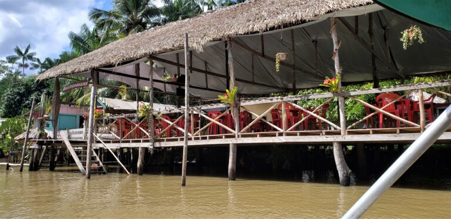
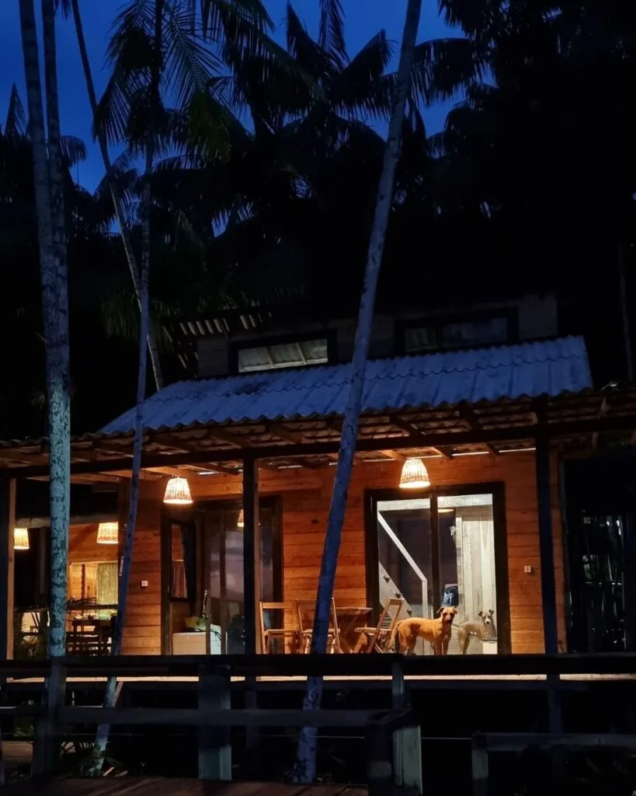
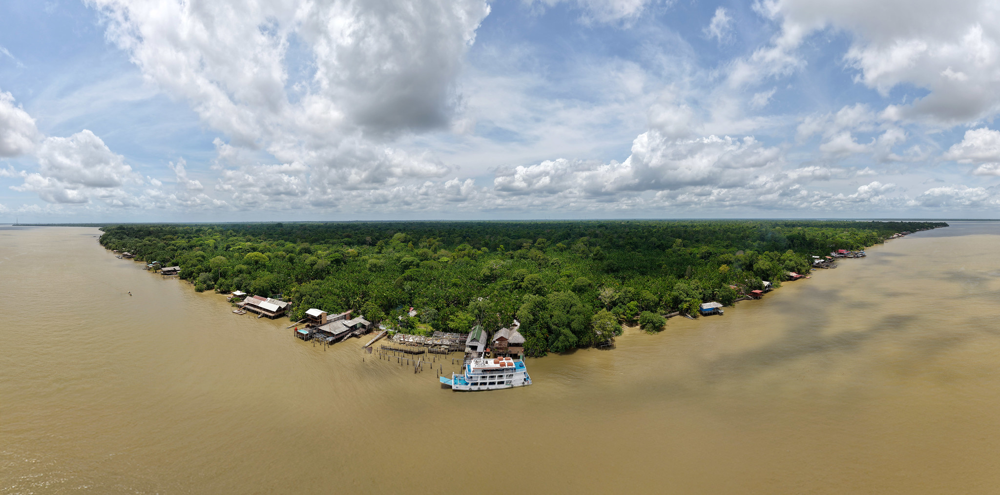

Ilha do Combu


Experiência no local
- Gastronomia e Lazer: Restaurantes como Saldosa Maloca, Boá, Porto Combu e Chalé da Ilha oferecem almoço com vista para o rio, redes para relaxar e acesso a banhos.
- Acesso e Transporte: Lanchas da cooperativa saem do Terminal Hidroviário Ruy Barata (Praça Princesa Isabel) com custo aproximado de R$ 10 a R$ 20 (ida e volta), uncionando geralmente até às 18h.
- Rota Combu: Nova iniciativa que integra 14 experiências, incluindo oficinas de biojoias e vivências de açaí.
Atrações
- Ruínas do Antigo Presídio: Local histórico que funcionou no século XX, oferecendo uma visita cultural sobre o passado da ilha.
- Praia do Farol: Próxima ao porto, possui boa estrutura de barracas, restaurantes e é ótima para assistir ao pôr do sol.
Gastos no local

Restaurante
Restaurantes (Almoço/Petiscos): Os preços variam bastante conforme o restaurante (ex: Saldosa Maloca, Terraço da Ilha, Porto Combu).

Hospedagem
Mais simples
De R$150,00 a R$400,00
Chalés e hospedagens médias R$300,00 a R$600,00, família de R$430,00 até R$1.400

Passeio de barco
A Ilha do Combu, em Belém, oferece passeios de barco rápidos (15 min) saindo do Terminal Hidroviário na Praça Princesa Isabel (Bairro Condor)
Sobre a ilha do combu
A Ilha do Combu é um refúgio amazônico a apenas 15 minutos de barco de Belém (Praça Princesa Isabel), ideal para natureza, gastronomia paraense e vivência ribeirinha. A Área de Proteção Ambiental (APA) oferece restaurantes com vista, chocolates orgânicos da Dona Nena, passeios de igarapé, trilhas de açaí e banhos de rio.
- Chocolates da Dona Nena: Visitar a "Filha do Combu" para conhecer a produção de cacau orgânico e degustar chocolates artesanais.
- Pousada Bar e Restaurante Farol (Praia do Farol)
- Rota Combu: Iniciativa que promove o turismo de base comunitária, incluindo trilhas, vivências ribeirinhas e oficinas de biojoias.
- Passeios de barco/igarapés
- Pôr do Sol
